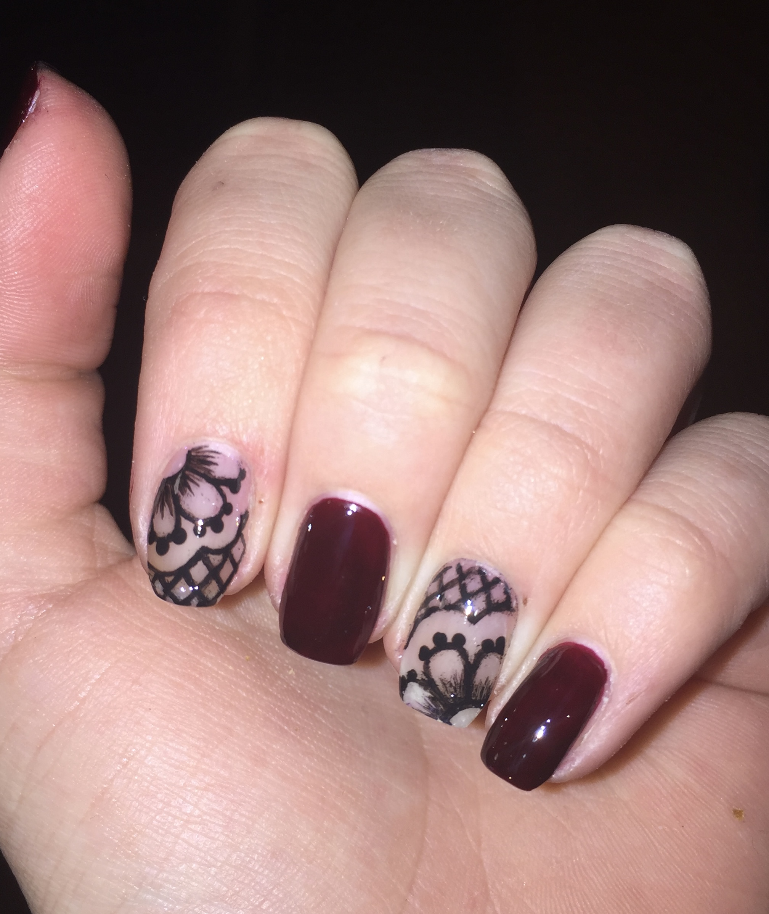
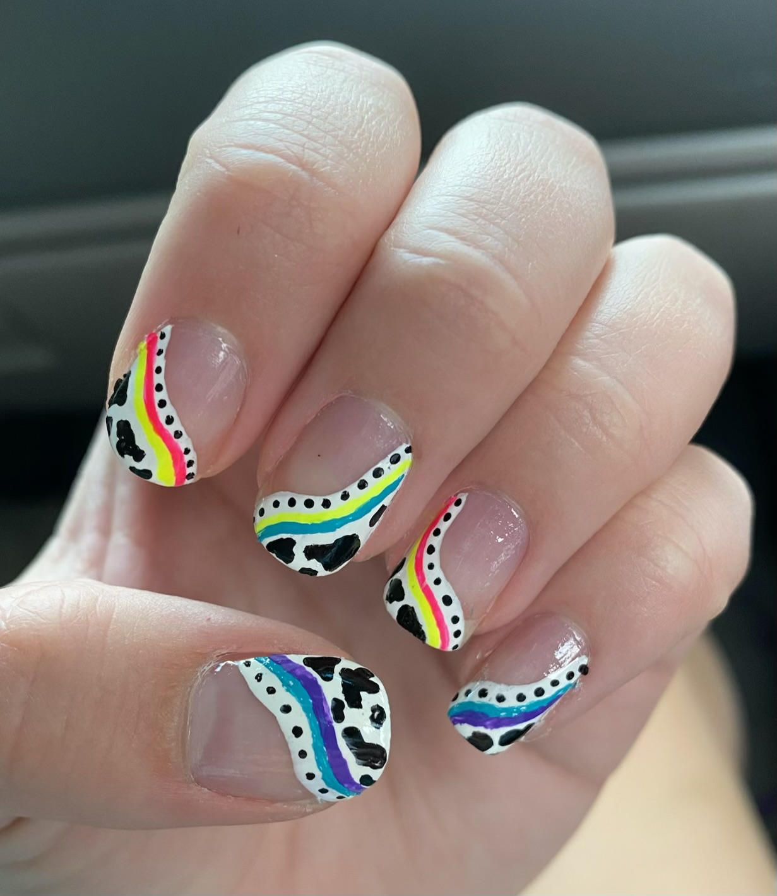
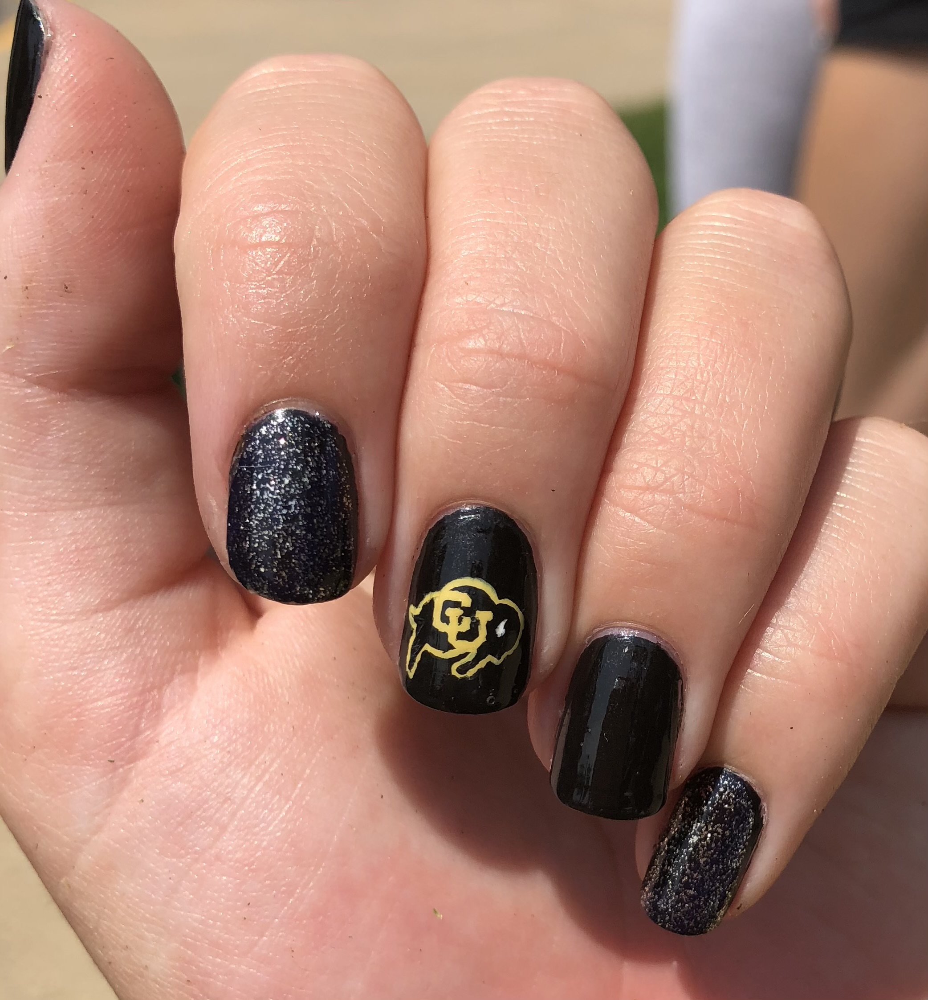

Nail art has been one of my biggest passions since I was about 12 years old! I love the concept of wearable art, and can happily spend hours working on my nails without noticing the time passing. I have included a few pictures of some of the designs I've done below, if you would like to see more feel free to take a look at my Instagram page that I use as an archive of my nail designs: @nails.by.abbyy on Instagram →



← Back to Home